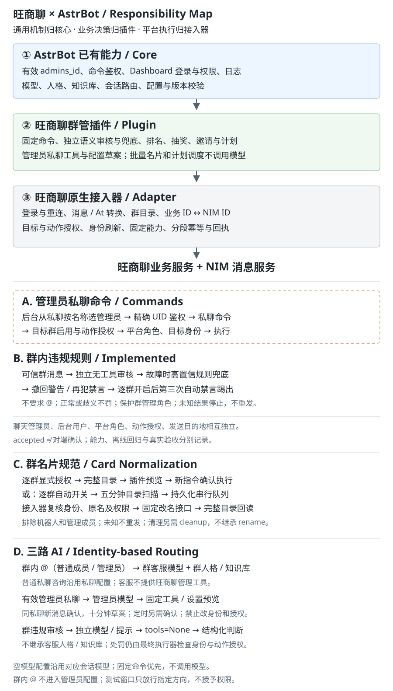

更新：2026-10-02。入门操作见从零开始使用， 完整功能与命令见插件说明， 全部资料见文档目录。
本接入器在 AstrBot 进程内完成业务认证、加密会话恢复、NIM 连接、目录与身份映射、 文本收发和固定群管理能力。不需要 Rust 服务、DH 工作台、桥接地址或配对令牌。

| 层 | 负责 | 不负责 |
|---|---|---|
| AstrBot | 有效配置、管理员、会话、模型、人格、知识库、后台认证与日志 | 旺商聊协议 |
| 接入器 | 登录、传输、可信身份、最终动作授权、幂等、回执与恢复账本 | 解析聊天命令或让模型决定权限 |
| 内置群管插件 | 固定命令、AI 工具、独立审核、排名、活动和每日计划 | 另造管理员系统或绕过执行器请求协议 |
| 插件管理页 | 模型/规则/逐群授权、活动参数、计划状态与有界审计 | 直接处罚、任意重试或聊天自授权 |
使用 Python 3.12+，在项目根目录执行：
uv sync --extra wsl
cd dashboard
pnpm install
pnpm generate:api
pnpm build
内置滑块组件需要 Node.js 和 OpenCV/ONNX，按需启动串行本地工作进程，无需 GPU。
Docker 构建需启用项目的 INSTALL_WSL 构建参数。依赖在目标系统/架构重新安装，
不能复制其他系统的虚拟环境、EXE、DLL 或 .pyd。部署入口存在不代表所有架构均已实测。
由部署管理员设置 ASTRBOT_WANGSHANGLIAO_CONFIG 指向受保护 JSON 文件：
| 字段 | 要求 |
|---|---|
origin |
HTTPS 服务根地址 |
headers |
协议请求头映射 |
metadata |
14 个整数 |
signing_seed、body_key、message_key、server_key |
标准 Base64 编码，解码后各32字节 |
captcha_id、app_key、device_id |
有效协议部署参数 |
Linux/macOS 文件应为 0600；Windows 使用仅服务账号可读 ACL。参数不得写入教程、
聊天或截图，也不从浏览器接口返回。缺失为 deployment_missing，不合格为
deployment_invalid。旧配置缺少 message_key 可以认证，但消息启动报
message_key_missing，不能把登录成功当收发就绪。
未设置环境变量时可加载已批准导入的
data/platform_data/wangshangliao/deployment/ 密封配置；显式路径无效时不静默回退。
导入协议配置不导入旧账号密码或账号会话。
ASTRBOT_YIDUN_SOLVER_URL 未设置或为 builtin 时使用内置求解器；
空值使用人工流程；外部 HTTP 求解服务为兼容选项。自动失败保留人工验证。
.venv/bin/python scripts/check_wangshangliao.py 做不联网、不打印凭证的预检，
预检通过不等于真实平台验收。
登录事务绑定后台用户与预分配实例，保存后才持久绑定账号并连接 NIM。
认证成功、配置保存和消息在线是三个独立状态。后台密码不等于旺商聊密码。
停用并保存关闭连接与处理任务，保留恢复会话；退出账号删除本地恢复凭据，
不擦除历史账本。重新登录先停止旧连接，保存后替换账号。reauth_required
需要重新登录。切换系统时先停止旧回复系统，不让两套自动化同时处理同群。
这些是保存配置的字段，不是要求用户直接编辑密封会话；优先使用后台，未知字段会拒绝。
| 字段 | 默认/范围与含义 |
|---|---|
id、type、enable |
实例身份；类型固定 wangshangliao；启停独立于账号退出 |
account_id、nickname、login_method |
当前业务账号/名称；登录方式 password 或 sms |
enabled_groups |
业务群ID字符串列表；默认空，不接受显示群号 |
reply_private |
默认true；私聊回复 |
reply_groups |
群ID到布尔值；缺省true，但群仍须启用 |
ai_routes.admin_provider_id |
管理模型ID字符串，空值继承当前私聊模型 |
ai_routes.groups |
群ID到客服模型ID字符串的映射，最多100群；不是嵌套对象 |
proactive_send |
enabled 默认false，targets 精确路由目的地，最多1000项 |
moderation |
总开关、逐群动作、规则/审核/名片自动化等，见下表 |
developer_test |
来源、群、范围、测试词、1至300秒、1至10次；只保存草稿 |
session_ref |
登录期间的一次引用；不要手工构造或写入示例 |
插件 API 提交字段名 customer_provider_id，实际保存为
ai_routes.groups["业务群ID"] = "模型ID"；空映射值为继承，不能写
{"customer_provider_id": "…"} 作为该映射值。
moderation 字段 |
默认/范围 |
|---|---|
enabled、automation_enabled、recall_enabled |
缺省false；分别为能力总开关、自动化、违规撤回 |
permissions |
群ID到动作列表，最多100群；必须显式保存 |
cooldown_seconds |
默认60，整数10至86400秒 |
mute_keywords、kick_keywords、旧 keywords |
各最多50条，每条非空、最多100字符；旧值仅兼容 |
semantic.enabled / provider_id |
默认false/空；独立审核模型 |
semantic.timeout_seconds |
默认12，整数1至30秒 |
semantic.context_limit |
默认20，整数1至50条；仍受近期同群窗口限制 |
auto_kick / card_auto |
群ID到布尔值，缺省false；逐群独立开关 |
progressive_mute |
默认false以兼容旧配置；实例级，开启须同时启用撤回，按5/15/60分钟递进 |
manual_kick_only |
实例级限制；当前接收机器人为true，拒绝AI及自动踢出，不能由AI配置工具修改；与任一true的 auto_kick 不兼容 |
content_rules_since |
业务规则生效时间；后端维护，不通过聊天任意修改 |
固定动作白名单：mute、unmute、kick、recall、announce、mute_all、
unmute_all、rename、cleanup。清理不继承踢出/名片授权，自动名片开关另需 rename。
| 标识 | 用途 | 不能替代 |
|---|---|---|
实例 ID，如 wangshangliao_… |
机器人实例及账本分区 | 旺商聊用户 UID |
| 业务用户 UID | 管理员身份、原生 At 的 qq、成员身份 |
昵称、手机号、NIM 账号 |
| 显示账号 | 客户端展示 | 业务 UID |
| 业务群 ID | 启用群、API 与动作授权 | 客户端显示群号 |
| NIM ID | 传输与目录映射 | 聊天管理员 UID |
不按昵称、手打 @名字 或群号猜身份。分页缺失、重复游标、映射冲突时不使用
不完整目录执行管理动作。群名片优先展示，昵称其次；身份校验仍使用稳定标识。
实例ID:GroupMessage:机器人业务UID/业务群ID
实例ID:FriendMessage:机器人业务UID/private/对端业务UID/BASE64URL_NIM_ID
私聊末段为 NIM ID 的 URL-safe Base64，不是昵称。私聊、群聊、不同实例、账号与对端隔离。 使用后台已有会话选择目的地，不伪造 UMO。本地已知私聊不是云端全部联系人。 普通群 AI 只认当前机器人 NIM 身份的结构化 @，并反 @ 原发送者；只 @ 其他人不触发。 固定命令例外：整条精确识别，不要求 @、斜杠或“群管”前缀。普通群消息可按框架配置 保留上下文，不因此主动回复。引用回复降级为文本，保留 At，不发送原生引用气泡。 图片、语音、文件等媒体收发未纳入当前能力。
| 消息 | 路由/模型 | 人格、知识库 | 群管能力 |
|---|---|---|---|
| 群内普通用户或管理员 @ | 群客服；逐群保存的模型ID（界面/API名 customer_provider_id） |
沿用该群会话 | 无旺商聊群管工具 |
| 普通用户私聊咨询 | 私聊客服；当前私聊模型 | 沿用私聊配置 | 无旺商聊群管工具 |
| 授权管理员私聊 | 管理员群管；实例 admin_provider_id |
沿用私聊配置 | 通过鉴权的固定工具 |
| 群消息内容审核 | 实例 moderation.semantic.provider_id |
独立审核提示与同群有界上下文 | tools=None，只给结构化判断 |
空模型选择沿用相应会话当前模型；人格工具白名单须允许 wsl_private_management，
管理模型须支持工具调用。其他人格工具并非全局禁用，隔离承诺针对旺商聊管理工具。
普通用户固定私聊命令（含“我的权限”“我的邀请”“帮助”“sid”）只返回“无权限”；
普通咨询仍受私聊回复开关控制。群内管理员 @ 不升级成私聊管理路由。
私聊专用固定命令在群内静默消费，不发送“此功能仅限私聊”或帮助引导， 不执行，也不转给客服 AI；帮助别名和业务规则模式的管理员群内踢出同样静默。 排名、抽奖报名/状态、本人邀请及允许的群管动作仍沿用原权限和回复。
首次管理员在有效配置的 admins_id 从已有私聊按名称选择；授权依据仍为 UID。
后台权限、聊天管理员、平台群角色、动作白名单与主动发送授权互不替代。
管理员自然语言改设置先预览再同私聊确认；明确要求创建并开启抽奖时，
确认后才开抽并通知群，只改下期参数不会启动。详细边界见插件说明。
默认关闭。开启总开关后，还必须保存精确群/私聊目的地授权；私聊对端须有可信已知会话。
private_peer_unknown 时先用真实客户端建立会话，不能靠插入假记录修复。
向受管机器人测试还需接收端有效测试窗口。普通回复不等于主动发送授权。
后台鉴权文本入口 POST /api/v1/im/messages 使用已知 umo 与 message
组件数组；plain 携带文本，at 的 qq 为字符串业务 UID，
不接受 NIM ID、昵称或伪造全员提及。请求/结果遵循接口的操作 ID 与去重契约。
通过 GET /api/v1/im/operations/{operation_id}?platform_id=实例ID 查询结果，
不要用重复发送来查是否成功。
发送需要后台 JWT 或具备 im 范围的受支持 API 凭据，不在文档提供认证绕过方式。
使用调用方稳定 operation_id（1至256字符）：同一业务操作查询/重试沿用该 ID，
新业务操作使用新 ID，不能把改正文当旧操作重试。未传 ID 会产生新操作，不适合结果不明时重发。
示例仅示意参数，不提供实际可发送的路由：
{
"umo": "从已有会话选择的UMO",
"operation_id": "caller-owned-unique-operation",
"message": [
{"type": "plain", "text": "测试通知 "},
{"type": "at", "qq": "已核验成员的业务UID", "name": "成员名"}
]
}
| 状态 | 含义与处理 |
|---|---|
accepted |
上游已受理，不保证对端看到或动作已回读 |
verified |
对应能力通过后续状态核验 |
rejected / failed |
拒绝或明确失败，先检查原因 |
unknown |
请求可能已执行，不盲目重试 |
needs_review |
处理中断，保留现场人工核查，不自动重新生成 |
每实例目录为 data/platform_data/wangshangliao/<实例ID的SHA256>/：
session.key、session.sealed 及消息、群管、名片、活动、每日计划 SQLite 账本。
密钥和密文同机不对主机管理员保密；备份按凭据管理。
消息先落库再确认，最多16会话并行、1024活跃会话排队，同会话顺序处理。
重启不重放已处理或结果未知的业务动作。
指定群功能回复每段受理20秒后撤回，包括一般命令结果、排名和违规警告。
抽奖开始、取消、中奖名单通知，以及报名和抽奖状态回复不自动撤回。
只撤回机器人自己的关联消息，不撤回成员命令、私聊、普通 AI 或任意主动发送；
任务持久化，逾期五分钟不补撤，失败/未知不盲目重试。
成员违规消息撤回另需 recall 授权与原始可信消息路由。
AI 结果转纯文本、保留链接与 At、关闭本平台 AI 结果文字转图片。
出站文本过滤已配对的 think/thinking/thought/analysis 标签块、
开头未闭合标签及孤立闭合标签，缓解模型把推理标签当正文发送。
不是全流式/所有推理过滤，也不清理日志和历史；过滤后可能无可见正文。
凭证、手机号和邮箱为有限规则遮盖，不是完整 DLP，也不阻止原文进入模型。
受管机器人默认互斥（含停用实例）。在接收实例选择来源发送实例和范围后保存，
还须点击“开启测试”；草稿保存不等于开启。窗口内存生效，最长300秒、最多10次入站，
每事件最多一个关联回复；重启、停止或换账号失效，反向保持互斥。
private_ai、私聊命令、群命令、group_ai 和群规则独立。
group_ai 必须真实结构化 @ 当前机器人；群规则仅用指定群与 WSL_TEST_ 关键词。
窗口不授予管理员、动作或平台角色，不能代替普通外部账号验收。
| 现象 | 优先检查 |
|---|---|
| 在线但无回复 | 接收账号/方向、回复已保存、真实 @、ignored_bot、有效窗口、有效配置 |
| 私聊“无权限” | 是否固定命令；有效路由配置 admins_id，不是其他配置或昵称 |
| 群排名无回应 | 群已启用且允许回复、精确单条命令、入站有可信身份 |
| 页面白屏 | 静态插件资源是否生成、浏览器错误、登录代理；不放宽 iframe sandbox |
| 活动/定时“未找到该路由” | 插件存活与路由注册、后端/页面版本同步；更新 HTML 不增加后端路由 |
unknown 或积压 |
查账本与操作结果，不删库、不重放、不反复处罚 |
| 排名换行或原生 @ 前空格丢失 | 当前全量回归已有3项格式失败；见测试文档，不视为已修复 |
验证入口见测试与验收， 备份见维护说明。 文件日志/调用追踪只恢复当前文件末尾有界记录，不是全量归档； 无手工标题的会话以已知名称/账号兜底，不额外调用模型生成标题。